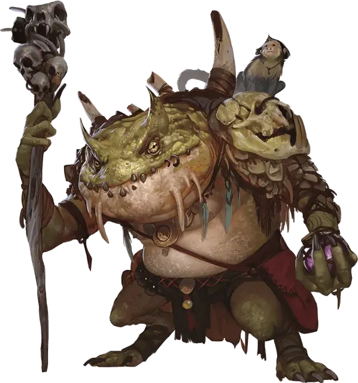

Зеленый слаад
Green Slaad
Большая Аберрация (Перевертыш), хаотично-нейтральная

Класс Доспеха 16 (природный доспех)
Хиты 127 (15к10 + 45)
Скорость 30 футов
| мод | спас | ||
|---|---|---|---|
| СИЛ | 18 | +4 | +4 |
| ЛОВ | 15 | +2 | +2 |
| ТЕЛ | 16 | +3 | +3 |
| мод | спас | ||
|---|---|---|---|
| ИНТ | 11 | +0 | +0 |
| МДР | 8 | −1 | −1 |
| ХАР | 12 | +1 | +1 |
Навыки Восприятие +2, Магия +3
Сопротивление урону звук, кислота, огонь, холод, электричество
Чувства слепое зрение 30 футов, тёмное зрение 60 футов, пассивное Восприятие 12
Языки Слаадский, Телепатия 60 фт.
Опасность 8 (3900 опыта)
Бонус мастерства +3
Особенности
Перевертыш. Слаад может действием превратиться в гуманоида Маленького или Среднего размера, или принять свой истинный облик. Все его статистики, кроме размера, одинаковы во всех обликах. Все несомое и носимое им снаряжение не превращается. Он принимает свой истинный облик, если умирает.
Врождённое колдовство. Базовой характеристикой слаада является Харизма (Сл спасброска от заклинания 12). Слаад может накладывать следующие заклинания, не нуждаясь в материальных компонентах:
• Неограниченно: волшебная рука [mage hand], обнаружение магии [detect magic], обнаружение мыслей [detect thoughts];
• 2/день каждое: невидимость [invisibility] (только на себя), ужас [fear];
• 1/день: огненный шар [fireball].
Сопротивление магии. Слаад совершает с преимуществом спасброски от заклинаний и прочих магических эффектов.
Регенерация. Слаад восстанавливает 10 хитов в начале своего хода, если у него есть хотя бы 1 хит.
Действия
Мультиатака. Слаад совершает три атаки: одну укусом, и две либо когтями, либо посохом. В качестве альтернативы, он два раза использует Метание пламени.
Укус (только в облике слаада). Рукопашная атака оружием: +7 к попаданию, досягаемость 5 футов, одна цель. Попадание: Колющий урон 11 (2к6 + 4).
Коготь (только в облике слаада). Рукопашная атака оружием: +7 к попаданию, досягаемость 5 футов, одна цель. Попадание: Рубящий урон 7 (1к6 + 4).
Посох. Рукопашная атака оружием: +7 к попаданию, досягаемость 5 футов, одна цель. Попадание: Дробящий урон 11 (2к6 + 4).
Метание пламени. Дальнобойная атака заклинанием: +4 к попаданию, дистанция 60 футов, одна цель. Попадание: Урон огнём 10 (3к6). Этот огонь воспламеняет горючие предметы, которые никто не несет и не носит.
Описание
Зеленые слаады удивительно интеллектуальны и обладают врождёнными способностями к колдовству. Зеленый слаад может изменить свой облик и предстать в виде гуманоида. Если он был рожден от носителя-гуманоида, то часто принимает его облик.
В какой-то непредвиденный момент существования зеленый слаад магически, мгновенно и навсегда превращается в серого слаада. Изучение тайны этого превращения может занять года и даже десятилетия.
См. дополнительно статью: "Бестиарий: Слаады"